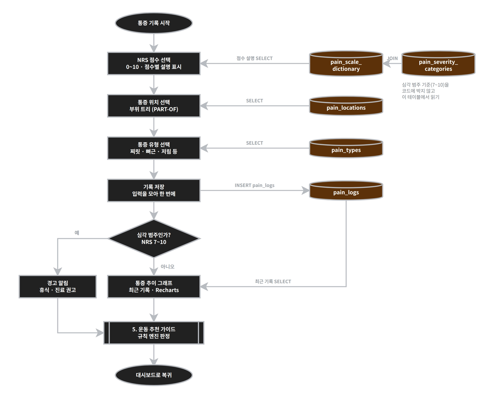
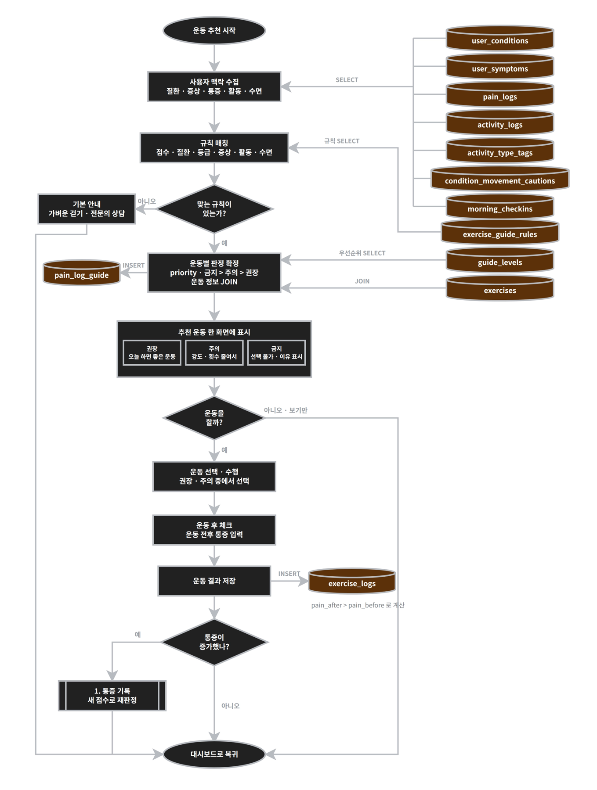
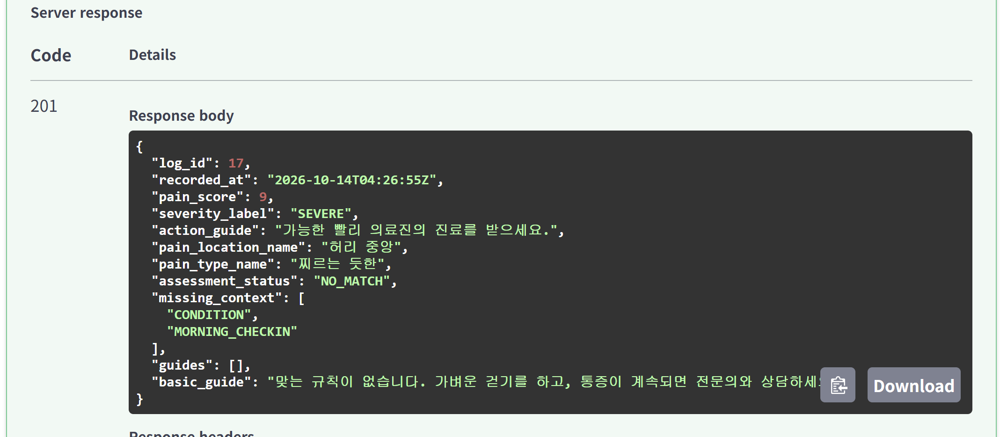
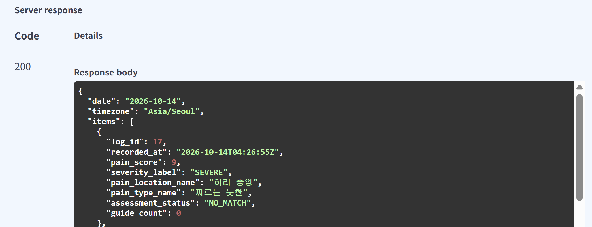
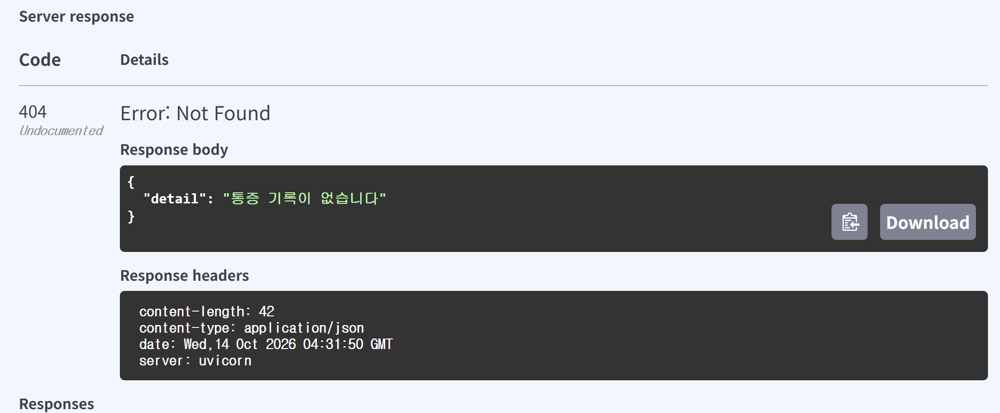

SPINELOG
S/W Week7
통증 기록 API와 규칙 판정 진행 상황
박찬우 · AI소프트웨어학과 · 2026. 10. 14
SpineLog
진행 요약
통증을 저장하면 운동 판정까지 함께 저장되는 API를 만들었습니다
1
통증 기록 API 4개
선택지 조회, 저장 + 판정, 상세 조회, 날짜별 목록
2
규칙으로 운동 판정
현재는 LLM 없이 DB 규칙 19개로 추천·주의·금기 판정 (이후 기능 추가 예정)
백엔드를 처음부터 다시 만들며 "왜 이렇게 짰는지"를 설명할 수 있게 하는 데 집중했습니다. NAS 배포는 다음 단계로 미뤘습니다.
S/W Week7 · 2
기능흐름도 7개 중 '1. 통증 기록 → 5. 운동 추천'을 먼저 구현
구현 현황
| 기능흐름도 | 상태 | 코드 |
|---|---|---|
| 메인 (가입·로그인·온보딩) | 미구현 | 시연 사용자로 대신함, 질환은 SQL로 입력 |
| 대시보드 | 미구현 | 없음 |
| 1. 통증 기록 | 구현 (일부 제외) | GET /api/pain-options, POST·GET /api/pain-logs |
| 2. 활동 기록 | API 미구현 | 규칙 판정 코드가 활동 기록을 읽기만 함 |
| 3. 아침 체크인 | API 미구현 | 규칙 판정 코드가 체크인 수면을 읽기만 함 |
| 4. 의학 콘텐츠 | 미구현 | 없음 |
| 5. 운동 추천 가이드 | 판정까지 구현 | services/rule_engine.py (통증 저장 때 실행) |
파란 줄 = 이번에 구현한 부분. 나머지는 DB 테이블만 설계되어 있습니다.
S/W Week7 · 3
파란색 = 이번에 구현 · 회색 점선 = 아직
전체 구조
화면
React (아직)
지금은 Swagger로 시험
요청 →
← 응답
FastAPI 서버
API (routers)
통증 기록 (구현)
체크인
활동
대시보드
콘텐츠
로그인
판정 (services)
규칙 판정 (구현)
공통
schemas 입력 검사 · deps 사용자(임시) · db 연결 · timeutil 시간대
SQL →
← 결과
MySQL 8
테이블 33개 설계
지금 쓰는 곳: 통증 기록, 판정 결과, 규칙, 사용자 상태
화면은 DB에 직접 가지 않고 항상 API를 거칩니다. 서버가 검사·판정한 뒤 DB에 저장하고, 결과를 다시 화면에 돌려줍니다.
S/W Week7 · 4
흐름도의 번호 = 오른쪽 코드
1. 통증 기록 흐름도와 코드

1
2
3
4
5
6
7
8
1 점수 선택 · GET /api/pain-options (scale) · 구현
2 위치 선택 · pain-options (locations) · 구현
3 유형 선택 · pain-options (types) · 구현
4 기록 저장 · POST /api/pain-logs · 구현
5 심각 범주인가? · 지금 기준: 통증 7점 이상이면 심각 (정확한 기준은 정하는 중) · 일부
6 경고 알림 · 미구현
7 통증 추이 · GET /api/pain-logs?date= 하루 목록만 · 일부
8 운동 추천 가이드 · 통증 저장 때 규칙 판정 실행 · 구현
흐름도에 없지만 추가한 것: 판정 상태 저장, 기록 상세 조회 (본인 기록만)
S/W Week7 · 5
흐름도의 5 심각 판단 · 6 경고 · 7 추이를 아직 안 한 이유
1. 통증 기록에서 남은 것
핵심 줄기를 먼저
저장 → 판정 → 다시 조회가 끝까지 동작하는 것이 이번 목표. 경고와 그래프는 그 결과 위에 얹는 기능
대부분 화면이 할 일
심각도는 지금 '통증 7점 이상이면 심각'으로 봄 (정확한 기준은 정하는 중). 경고 표시와 그래프는 React 화면에서
7일 추이는 날짜 범위가 필요
하루 범위(한국 0~24시)는 해결. 이를 7일로 늘리고 날짜별로 묶는 API가 남음
다음에 할 일
① 7일 범위 조회 API ② 정확한 심각도 기준 정하기 (지금은 7점 이상) ③ React 화면 (경고 · 그래프)
S/W Week7 · 6
흐름도의 번호 = 오른쪽 코드
5. 운동 추천 흐름도와 코드

1
2
3
4
5
6
7
1 사용자 맥락 수집 · collect_context: 질환 · 증상 · 활동 · 수면 · 구현
2 규칙 매칭 · match_rules: 조건 칸이 비어 있으면 '안 봄' · 구현
3 맞는 규칙 없음 → 기본 안내 · NO_MATCH + 기본 안내 문구 · 구현
4 운동별 판정 확정 + 저장 · decide → save_guides · 구현
5 추천 운동 표시 · 응답에 금기 → 주의 → 추천 순으로 담음, 화면은 없음 · API만
6 운동 수행 · 운동 후 체크 · 결과 저장 · exercise_logs 저장 없음 · 미구현
7 통증이 늘면 재판정 · 미구현
흐름도와 다른 점: 흐름도는 condition_movement_cautions 표로 맥락을 모으지만, 코드는 규칙에 적힌 동작 태그(target_tag_id)로 활동을 비교합니다.
S/W Week7 · 7
예: Chan이 허리 중앙에 6점 통증을 저장할 때
통증 저장 흐름
1 화면이 요청
POST /api/pain-logs
점수 6 · 위치 · 유형
→
2 입력 검사
schemas.py
0~10 밖이면 422
→
3 누구인지
deps.py
Chan (시연 사용자)
→
4 통증 저장
pain_logs.py
pain_logs에 저장
규칙 판정 · rule_engine.py
5 내 상태 모으기
질환 3번 2등급 · 다리 저림 · 체크인 없음
→
6 규칙 고르기
19개 중 조건 맞는 규칙만
→
7 운동마다 하나로
맥켄지 금기 · 버드독 주의 · 플랭크 추천
→
8 판정 저장
문구 · 규칙 번호 · 상태(부분 판정)
→
9 다시 읽어서 화면에 응답
load_detail · 201 · 화면에 보인 결과 = DB에 남은 결과 (다음 장 캡처)
S/W Week7 · 8
Swagger(/docs)에서 실행한 결과
실행 결과 1: API 목록과 선택지

통증 기록 API 4개

점수 설명 · 위치 · 유형 선택지를 한 번에
S/W Week7 · 9
6점을 저장하면 판정 결과까지 함께 저장되고, 나중에 다시 봐도 같은 결과
실행 결과 2: 저장과 판정

저장 성공(201) · 질환·체크인 정보가 없어 맞는 규칙 없음(NO_MATCH)

13번을 다시 조회(200) · 저장된 결과 그대로
S/W Week7 · 10
규칙이 없을 때, 값이 잘못됐을 때, 기록이 없을 때
실행 결과 3: 여러 경우

④ 9점 → 201 · 맞는 규칙 없음(NO_MATCH) + 기본 안내

⑤ 11점 → 422 · 10 이하만 허용

⑦ 날짜 비우면 오늘(Asia/Seoul) 기록 목록

⑧ 없는 번호 999999 → 404
S/W Week7 · 11
어제 · 오늘 작성한 코드, 파일마다 한 가지 일만
작성한 파일
| 파일 | 하는 일 | 확인 |
|---|---|---|
| main.py | 서버 입구, 라우터 연결, health · db-check | 내 PC |
| db.py | .env로 DB 연결, 연결마다 UTC 고정 | 내 PC |
| deps.py | 요청한 사용자 판단 (지금은 시연 사용자) | 내 PC (임시) |
| timeutil.py | UTC 저장, 사용자 시간대의 '하루' 계산 | 테스트 DB |
| schemas.py | 요청 · 응답 모양, 잘못된 입력은 422 | 테스트 DB |
| routers/pain_logs.py | 통증 기록 API 4개 | 저장: 내 PC / 판정: 테스트 DB |
| services/rule_engine.py | 규칙으로 운동 판정 (상태 모으기 → 규칙 검사 → 판정) | 테스트 DB |
| migrations 001 · 002 | 판정 이력 컬럼 추가, 시연 사용자 질환 입력 | 적용 확인 필요 |
S/W Week7 · 12
교수님 피드백 "나라별 시간, 표준시를 어디로 할지"
어려웠던 점 1: 시간대
1 · 해결
UTC로 저장하니 아침 기록이 '어제'가 됨
한국 10/14 08:00 = 세계 표준시 10/13 23:00. 저장은 표준시로 하고, 찾을 때는 한국의 하루(0~24시)를 표준시로 바꿔서 찾음
해결 → timeutil.py의 local_date_range_utc()가 한국의 하루를 표준시 범위로 바꿔 줌 (다음 장 코드)
2 · 결정
시차를 +9가 아닌 이름(Asia/Seoul)으로
서머타임 때문에 시차가 계절마다 바뀜 (뉴욕은 2026-03-08 하루가 23시간)
해결 → users.timezone에 'Asia/Seoul'을 저장하고 ZoneInfo로 계산
3 · 남은 한계
여행하면 '하루 = 잠 한 번'이 깨짐
서울 10/20 아침 체크인 후 뉴욕 10/20 아침 체크인 → 어느 기준이든 같은 날짜. 아직 해결 못 함
S/W Week7 · 13
ZoneInfo로 사용자 시간대의 하루를 UTC 범위로 변환
시간대 계산 코드 · timeutil.py
def local_date_range_utc(tz_name, d): # 사용자 시간대 이름("Asia/Seoul")과 날짜
start = datetime.combine(d, time.min, tzinfo=ZoneInfo(tz_name)) # 사용자 시간대의 0시
end = start + timedelta(days=1) # 다음 날 0시
to_utc = lambda x: x.astimezone(timezone.utc).replace(tzinfo=None) # UTC로 변환
return to_utc(start), to_utc(end) # (시작, 끝) 두 개를 돌려줌
# 날짜별 목록 API에서 쓰는 곳
start, end = local_date_range_utc("Asia/Seoul", date(2026, 10, 14))
... WHERE recorded_at >= :start AND recorded_at < :end # 끝은 '미만' (다음 날 0시 제외)
한국 10/14 하루
10/14 00:00 ~ 10/15 00:00 (Asia/Seoul)
= 10/13 15:00 ~ 10/14 15:00 (UTC)
아침 8시 기록
DB에는 10/13 23:00 (UTC)로 저장
→ 위 범위 안이라 10/14 기록으로 제대로 찾음
S/W Week7 · 14
건강 정보라서, 틀린 판정보다 '믿을 수 없는 판정'이 더 위험
어려웠던 점 2: 판정을 믿을 수 있게
고민
규칙끼리 다른 답을 내면?
한 운동에 '추천'과 '금기'가 같이 걸림. 어느 쪽이 맞는지 프로그램은 모름
→ 더 위험한 쪽을 따름
고민
판단할 근거가 없으면?
맞는 규칙이 없거나 체크인이 빠졌는데 결과가 '추천'처럼 보이면 위험
→ 판정 상태를 따로 저장 (NO_MATCH · PARTIAL)
고민
규칙이 나중에 바뀌면?
판정 결과에 규칙 번호만 남기면, 규칙 문구를 고쳤을 때 지난 기록의 안내도 같이 바뀌어 버림
→ 판정할 때 안내 문구도 판정 결과에 같이 저장 (규칙을 고치는 기능 자체는 아직)
S/W Week7 · 15
나머지 API와 로그인까지
다음 주 계획
- 아침 체크인 · 활동 기록 API (판정에 쓸 수면 · 활동 자료)
- 대시보드 · 의학 콘텐츠 API
- 통증 7일 추이 API
- 회원가입 · 로그인 (deps.py를 토큰 검사로 교체)
감사합니다 · 질문 받겠습니다
S/W Week7 · 16
부록
규칙 판정 코드
규칙 검사 · 규칙이 겹칠 때 · 판정 상태
질문이 나오면 보여 드립니다
S/W Week7 · 17
S/W Week7 · 부록 18
규칙 검사 코드 · rule_engine.py match_rules
def match_rules(conn, pain_score, ctx): # 점수와 내 상태(ctx)를 받아서 걸리는 규칙을 고름
# 1) 점수 범위가 맞는 규칙만 DB에서 가져옴 · 칸이 비어 있으면(NULL) 조건 없음
rows = conn.execute(text("""SELECT r.*, g.level_code FROM exercise_guide_rules r ...
WHERE (r.min_pain_score IS NULL OR :s >= r.min_pain_score)
AND (r.max_pain_score IS NULL OR :s <= r.max_pain_score)"""), {"s": pain_score})
matched = [] # 걸린 규칙을 담을 곳
for r in rows: # 2) 나머지 조건을 하나씩 검사 · 안 맞으면 continue = 탈락
if r["target_condition_id"] is not None and r["target_condition_id"] not in ctx.grades:
continue # 그 질환이 없음 (질환 등급 범위도 같은 방식으로 검사)
if r["target_symptom_id"] is not None and r["target_symptom_id"] not in ctx.symptom_ids:
continue # 그 증상이 없음
if r["target_tag_id"] is not None and r["target_tag_id"] not in ctx.recent_tag_ids:
continue # 어제부터 그 동작을 한 적 없음
if r["max_sleep_minutes"] is not None and (
ctx.sleep_minutes is None or ctx.sleep_minutes > r["max_sleep_minutes"]):
continue # 수면 조건이 안 맞음 (오늘 체크인이 없어도 탈락)
matched.append(dict(r)) # 모든 검사 통과 → 걸린 규칙
return matched
services/rule_engine.py · 같은 운동에 규칙이 여러 개면 더 위험한 쪽을 따름
규칙이 겹칠 때 (decide)
LEVEL_RANK = {"CONTRAINDICATED": 3, "CAUTION": 2, "RECOMMENDED": 1} # 금기 3 · 주의 2 · 추천 1
def decide(matched): # matched: 조건이 맞은 규칙 목록
final = {} # 결과를 담을 곳: {운동 번호: 이긴 규칙}
for r in matched: # 규칙을 하나씩 보면서
key = (-LEVEL_RANK[r["level_code"]], r["priority"]) # 점수표 (위험도, 우선순위)
cur = final.get(r["exercise_id"]) # 이 운동에서 지금 이기고 있는 규칙
if cur is None or key < cur["_key"]: # 처음 보는 운동이거나, 새 규칙이 더 강하면
final[r["exercise_id"]] = {**r, "_key": key} # 새 규칙으로 바꿈
return final # 운동마다 규칙 하나씩 남음
파란 줄 읽는 법
앞의 위험도부터 비교하고, 같을 때만 우선순위를 봄. 마이너스를 붙여 '작을수록 이김'으로 맞춤
예
추천(우선순위 1) = (-1, 1), 주의(우선순위 9) = (-2, 9) → -2가 더 작으니 주의
S/W Week7 · 부록 19
'근거 없음'이 '추천'처럼 보이지 않게 상태를 따로 남김
판정 상태 코드 · rule_engine.py
# ① collect_context 안: 빠진 자료를 적어 둠
if not ctx.grades: # 질환 정보가 없으면
ctx.missing.append("CONDITION")
if ctx.sleep_minutes is None: # 오늘 아침 체크인이 없으면
ctx.missing.append("MORNING_CHECKIN")
# ② 판정이 끝난 뒤 상태 붙이기
def assess_status(final, ctx):
if not final: # 걸린 규칙이 하나도 없음
return "NO_MATCH" # 기본 안내만, '추천'으로 보이지 않게
if ctx.missing: # 판정은 했지만 빠진 자료가 있음
return "PARTIAL"
return "COMPLETED" # 판정도 했고 자료도 충분
COMPLETED
판정 완료
PARTIAL
부분 판정 (체크인 등 빠짐)
NO_MATCH
맞는 규칙 없음, 기본 안내만
S/W Week7 · 부록 20